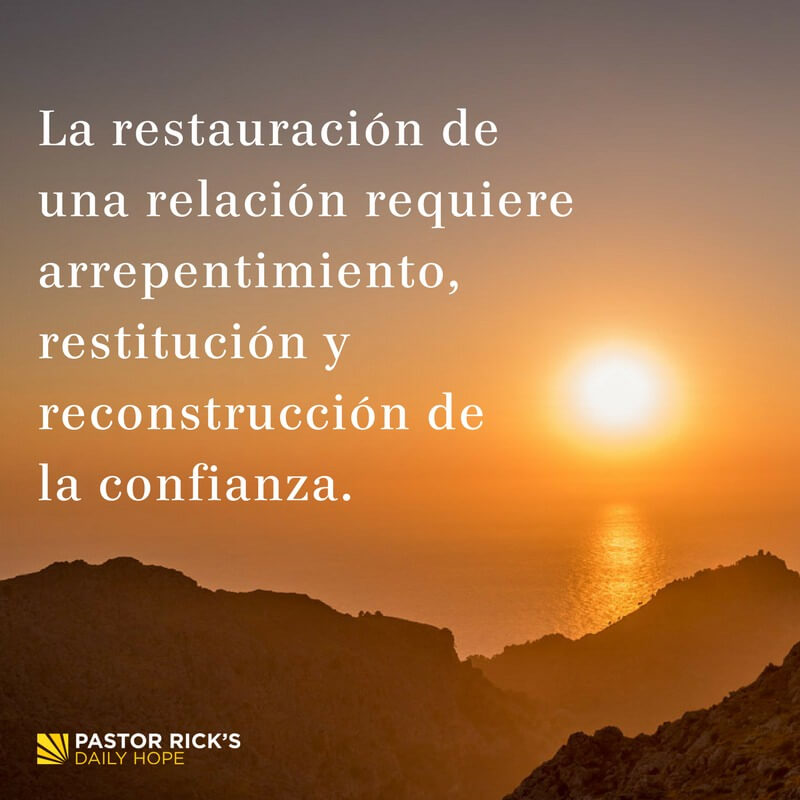

"Sean bondadosos entre ustedes, compansivos, perdonándose las faltas que unos contra otros puedan
cometer, de la misma manera que Dios nos perdonó en Cristo." Efesios 4:32
Se origina de los vocablos latinos "per" que significa paso o dejar pensar, y "don" que quiere decir
regalo. implica dejar delado una ofensa, renunciando al odio, al rencor, a las deseos de venganza.
Es un regalo que libera en doble vía.
Pensamientos para reflexionar
"Perdonar es el valor de los valientes; solamente aquel que es bastante fuerte para perdonar una
ofensa, sabe amar." Mahatma Gandhi
Perdonar a alguien, especialmente cuando ha cometido una ofensa o una injusticia, requiere valentía. No
siempre es fácil dejar ir los sentimientos de rencor o enojo, pero hacerlo es un acto de coraje.Quienes
son capaces de perdonar demuestran una fortaleza interior que les permite amar de manera más plena y
comprensiva, incluso a pesar de las imperfecciones de los demás.
Juan Pablo II
Fue un influyente Papa que visitó más de 130 países. Nacido en Polonia en 1920, superó
numerosos desafíos personales y
políticos, incluida la ocupación nazi. Después de ser ordenado sacerdote en 1946, se
convirtió en Arzobispo de Cracovia
en 1964 y Cardenal en 1967.
Asumió el papado en 1978 y se convirtió en un defensor de la paz, la libertad y el perdón.
Sobrevivió a un atentado en
1981 y mostró un notable acto de perdón al visitar a su agresor. Fue un Papa incansable que
utilizó los medios de
comunicación y viajó por el mundo, especialmente en defensa de los jóvenes y la paz.
Juan Pablo II también pidió perdón por los errores históricos de la Iglesia Católica, como
la matanza de protestantes en
Francia y el Holocausto. Su legado incluye un enfoque en el amor incondicional y la
esperanza. Falleció después de una
larga enfermedad en 2005. Su papado dejó una huella profunda en la Iglesia y en la historia.
Principio Del Perdón
Libertad
"No, hermanos, todavía soy el que debo ser, pero eso sí, olvidando el pasado y con la mirada fija en
lo que está por adelante…" Felipenses 3:13
Facultad natural que tiene el hombre de obrar de una manera o de otra, y de no obrar, por lo que es
responsable de sus actos.
El progreso y el crecimiento personal y espiritual a menudo implican dejar atrás el
pasado, con nuestros errores y preocupaciones, y enfocarnos en el futuro con una actitud de optimismo y
esfuerzo constante.
Pensamientos para reflexionar
"El perdón no cambia el pasado, pero amplia el futuro." Paul Boese
Aunque el perdón no puede cambiar lo que ha ocurrido en el pasado, tiene el poder de enriquecer y
expandir las posibilidades futuras. Perdonar es un acto de liberación que permite construir un futuro
más saludable, libre de resentimientos y cargas emocionales.
Principio Del Perdón
Compensación
"La inquidad se repara con misericordia y verdad; el mal se evita mediante la reverencia a Dios."
proverbios 16:6
Significa pagar por algo o perdonar.
Pensamientos para reflexionar
"El perdón es un don de alto valor, aunque no nos cuesta nada."
El acto de perdonar tiene un valor intrínseco y significativo en las relaciones y en la vida en general.
El perdón puede sanar heridas, restaurar relaciones y promover la paz interior.A pesar de su valor, el
perdón no implica un gasto material ni un desembolso financiero.
Principio Del Perdón
Restauración
"!Padre, perdónalos¡ -Exclamó Jesús ¡No saben lo que hacen!" Lucas 23:34
Reparar, renovar o volver a poner algo en el estado o estimación que antes tenía.
Se refiere a la acción de restaurar una relación dañada o rota después de que se ha producido un
conflicto, herida o transgresión. Implica el proceso de sanar, reconstruir la confianza y volver a
establecer una conexión positiva entre las partes involucradas. La restauración implica a menudo un acto
de perdón mutuo y la disposición a dejar atrás los sentimientos de rencor o resentimiento.
Pensamientos para reflexionar
"Vencer y perdonar, es vencer dos veces."
"Perdonar solo se aprende en la vida cuando hemos necesitado que nos perdonen con frecuencia."
La experiencia de necesitar el perdón de los demás con frecuencia puede llevar a una mayor comprensión y
aprecio por la importancia del acto de perdonar. A menudo, quienes han sentido en carne propia la
necesidad de ser perdonados son más propensos a practicar el perdón hacia los demás. El perdón se
convierte en una virtud que se desarrolla a partir de la propia experiencia y empatía.

Principio De Perdón
Sanidad
"¿Hasta cuándo me tendrás en el olvido, Señor? ¿Enternamente? ¿Hasta cuándo vas a estar apartando de
mí la vista cuando padezca necesidad?" salmo 13:1
Se refiere a los efectos beneficiosos que el acto de perdonar puede tener en la salud mental y emocional
de una persona. Perdonar a alguien que nos ha herido o agraviado puede tener un impacto positivo en
nuestra salud de varias maneras.
Pensamientos para reflexionar
"A medida que perdnamos, en el sentido más profundo del termino, nos sanamos un poco más y nos
deshacemos de la ira y el rencor que nos atormentan."
"Es un hecho que le tiempo no sana todas las heridas, hay necesidad de tomar acción: !Perdona!"
Para sanar las heridas emocionales, es fundamental tomar la acción consciente de perdonar. El perdón no
solo libera a la persona que perdona, sino que también puede tener un impacto positivo en la relación
con la persona que ha causado la herida. En lugar de confiar exclusivamente en el paso del tiempo, el
perdón es una herramienta poderosa
para la curación emocional y la restauración de la paz interior.